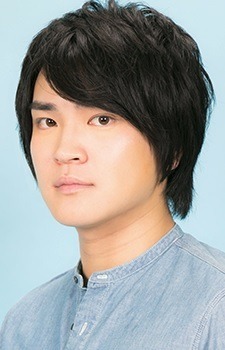
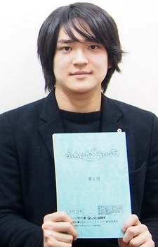
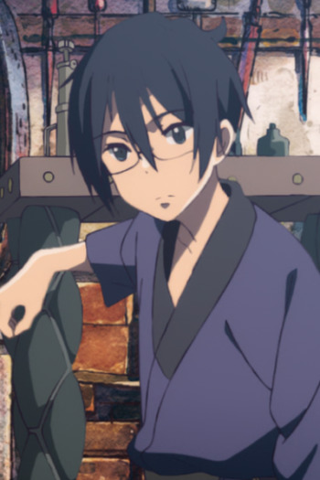

Shinsuke Sugawara is a Japanese voice actor. He voiced Kei Kuramoto in Flying Witch, and Archid Olter in Knight's & Magic.
- Gender: Male
- Birthday: August 28
- Hometown: Ibaraki, Japan

|
|---|
|  |
Shinsuke Sugawara is a Japanese voice actor. He voiced Kei Kuramoto in Flying Witch, and Archid Olter in Knight's & Magic.
|
 |
|---|
|  | Ro |
|
Ro is a Marked young boy of the Mud Whale and a friend of Chakuro. He is generally quiet and hard for other to tell what he is thinking. |
Go Back to Main Page |
Go Back to Homepage |
|
|
|
OR |
|